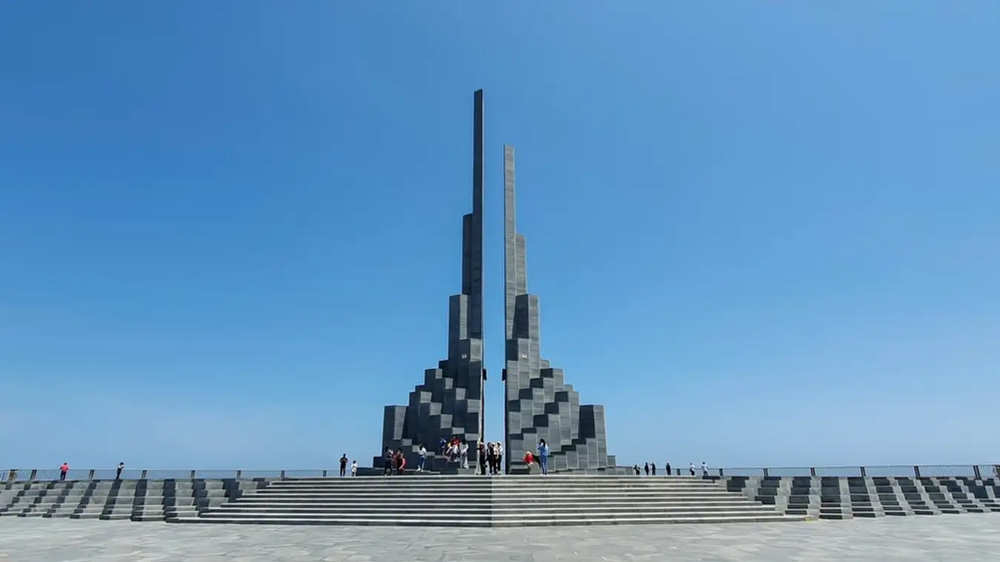

HELLO, IT'S NICE TO MEET YOU

Phú Yên là tỉnh thuộc duyên hải Nam Trung bộ, một vùng đất có bề dày lịch sử – văn hóa, có vị trí rất quan trọng trong tiến trình phát triển của dân tộc Việt Nam.
Hiện tại, trên địa bàn tỉnh có 84 di tích.
Trong đó, có 1 di tích được xếp hạng quốc gia đặc biệt, 21 di tích quốc gia và 62 di tích cấp tỉnh.
Cùng với hệ thống di sản văn hóa vật thể, Phú Yên còn bảo tồn và phát huy được nhiều di sản văn hóa phi vật thể với nhiều loại hình đa dạng, phong phú như:
Lễ hội truyền thống, trò chơi dân gian, các làn điệu dân ca dân vũ; đặc biệt lễ hội Cầu ngư của ngư dân miền biển và nghệ thuật trình diễn
Trống đôi, Cồng ba, Chiêng năm của đồng bào dân tộc Chăm, Bana ở miền núi Phú Yên, được công nhận là di sản văn hóa phi vật thể cấp quốc gia.
Về cảnh quan thiên nhiên, Phú Yên còn sở hữu nhiều bãi biển rộng lớn, nước trong xanh, bờ cát mịn trải dài gần 200km bờ biển, gắn với nhiều đầm,
vịnh cảnh quan thiên nhiên đẹp, nổi bật nét kiến tạo địa chất độc đáo như gành Đá Đĩa, Hòn Yến, vịnh Xuân Đài, đầm Ô Loan, Bãi Xép, Bãi Môn –
Mũi Điện, Vũng Rô, núi Đá Bia, Hòn Nưa.
Vùng đất Phú Yên thân thương nằm dọc trên thắt lưng mảnh đất hình chữ S không chỉ là nơi có nhiều danh thắng nổi tiếng như:
Ghềnh Đá Đĩa, Nhà thờ Mằng Lăng, Núi Nhạn, Sông Đà…
mà còn là nơi sản sinh ra nhiều món ẩm thực độc đáo, mang đậm dấu ấn riêng, vừa ngon lại vừa hợp túi tiền.
Ngoài ra, nhờ thiên nhiên ưu đãi, Phú Yên có nhiều đặc sản văn hóa ẩm thực như sò huyết Ô Loan, ốc nhảy,
ghẹ đầm Cù Mông, cá ngừ, bánh tráng lòng heo Hòa Đa,
bò một nắng, các sản vật tôm, mực, cá miền biển và nước ngọt có vai trò quan trọng trong việc tạo dấu ấn đối với khách du lịch….
Chỉ cần một lần đặt chân đến mảnh đất Phú Yên, mọi du khách đều sẽ bị mê hoặc bởi thiên nhiên núi rừng hùng vĩ, con người thân thiện và nhiều món ăn hấp dẫn.
Và điều mà nhiều du khách cảm thấy tò mò nhất chắc hẳn là đặc sản Phú Yên phải không nào? Vậy vùng đất này có những món ăn nào có thể khiến du khách hấp dẫn đến như vậy!
Hãy để VN Foods giúp bạn hiểu hơn về văn hoá ẩm thực nơi đây nhé!